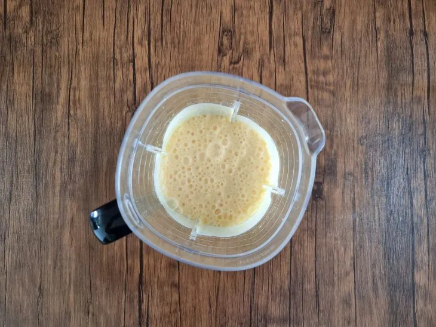
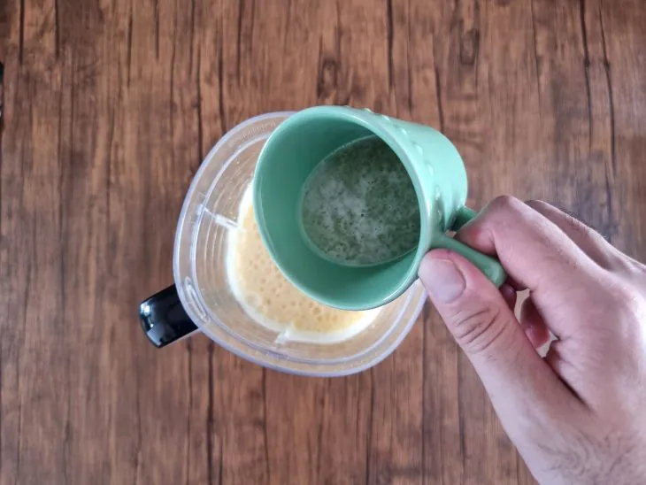
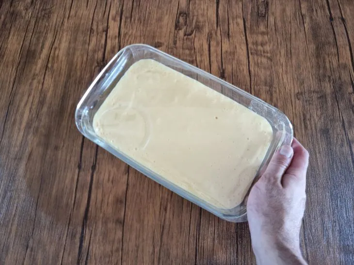
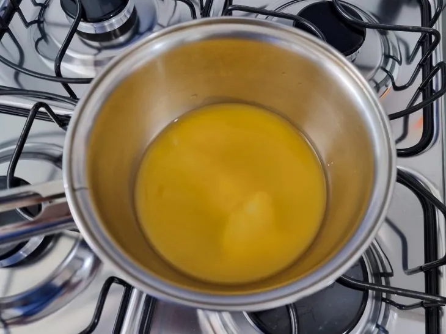
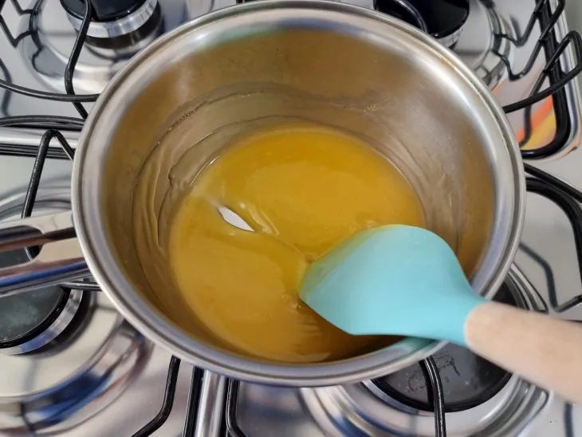
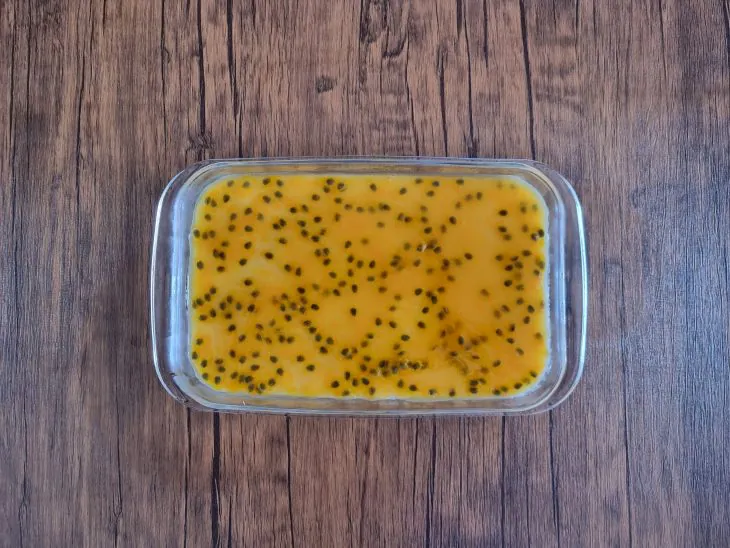
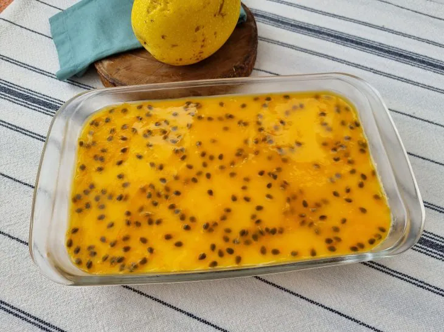

ingredientes do mousse
1 envelope de gelatina sem sabor (8 gramas) 5 colheres de sopa de água 1 lata de leite condensado 1 lata de creme de leite 200 ml de suco concentrado de maracujá
ingredientes da calda
1/2 xícara de chá de água 1 colher de sopa de amido de milho 3 colheres de sopa de suco de maracujá natural 3 colheres de sopa de açúcar Sementes de maracujá para decorar
modo de preparo do mousse
No liquidificador, bata o leite condensado, o creme de leite e o suco de maracujá até ficar bem homogêneo;
Adicione a gelatina hidratada e bata apenas para misturar;
Coloque a mistura em uma travessa, cubra com papel filme e leve à geladeira por no mínimo 2 horas.
modo de preparo da calda e finalização
Em uma panela, coloque todos os ingredientes da calda, com exceção das sementes;
Mexa em fogo médio até a calda engrossar e ficar brilhante;
Quando estiver fria, adicione as sementes e despeje a calda sobre a mousse;
Sirva bem gelado e aproveite!
